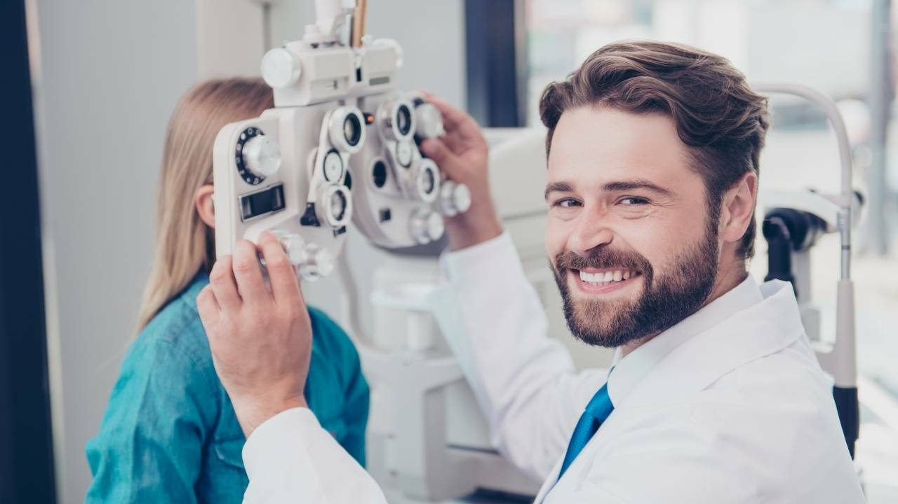

A oftalmologia (grego: ophthalmós (olho) + logos (estudo): estudo do
olho) é uma especialidade da medicina que estuda e trata as doenças
relacionadas ao olho, à refração e aos olhos e seus anexos
O que ele faz?
Fazer exames de vista;
Prescrever óculos e lentes de contato;
Realizar cirurgias oftalmológicas;
Diagnosticar e tratar doenças oculares, como catarata, glaucoma e
degeneração macular;
Acompanhar pacientes com doenças crônicas, como diabetes, que podem
afetar a saúde ocular;
Avaliar a saúde ocular de bebês e crianças, identificando problemas
como estrabismo e ambliopia;
Aconselhar pacientes sobre hábitos saudáveis para a saúde dos olhos,
como o uso adequado de óculos de sol e a importância de pausas
regulares em trabalhos que envolvem a leitura de telas de
computador.